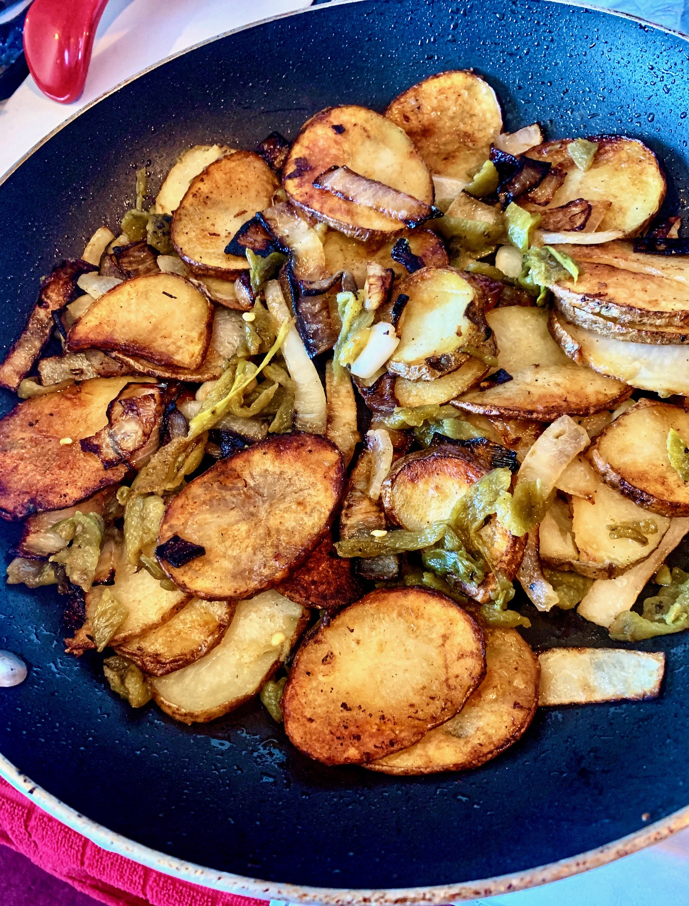

Country Fried Potatoes

Description
Spice up your life and kick up your breakfast potatoes a notch by adding Hatch chiles.
I used fresh-frozen charred Hatch chiles, but you can use canned if fresh are not in season.
Ingredients
- 2 Hatch chile peppers
- 2 tablespoons vegetable oil
- 1 large russet potato
- 1/2 medium onion, sliced
- 1 pinch seasoned salt (such as LAWRY'S®), or to taste
- freshly cracked black pepper to taste
Steps
- Place Hatch chiles directly on the grates of a gas stove over medium heat. Cook,
flipping with tongs occasionally, until blackened and charred, about 5 minutes.
Place in a sealed plastic bag and allow to cool, 7 to 8 minutes. Peel off charred
skins, remove seeds, and slice chiles.
- Slice potato using a mandoline.
- Heat oil in a large skillet over medium-high heat until shimmering. Add potato slices
and fry undisturbed until starting to brown and soften, 8 to 12 minutes. Add onion slices
and chiles. Season with seasoned salt and black pepper. Stir to combine. Cook until onions
are translucent and potatoes are fully softened and browned on the second side, 5 to 8 minutes.
Back to Home